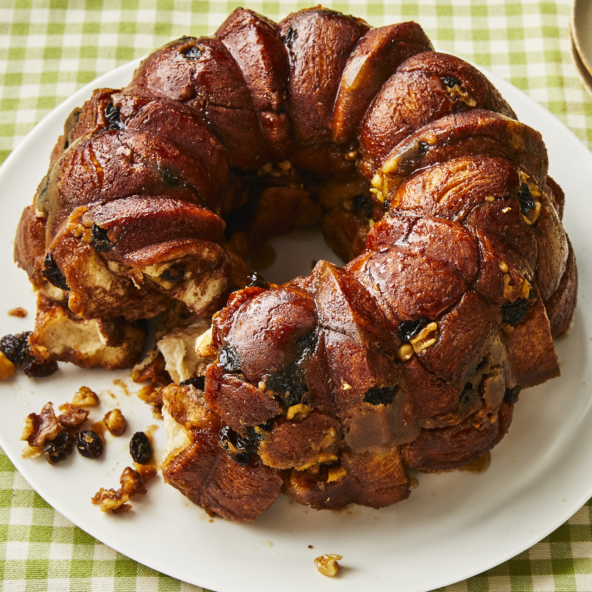

Monkey bread

Description
This sweet, sticky, gooey pull-apart bread, whimsically called "monkey bread," is a
popular sharable treat for breakfasts, desserts, and snacks. Tasting like pull-apart
sticky buns, monkey bread is easy to make with everyday pantry ingredients, and can be
customized with add-ins like dried fruits, nuts, and spices to suit your tastes. And
with thousands of ratings and reviews, this is one of our best monkey bread recipes.
I'll show you how to make this top-rated recipe for monkey bread, with plenty of how-to
tips to guarantee success.
Ingredients
- Biscuit dough
- White sugar
- Ground cinnamon
- Walnuts
Steps
-
Heat oven to 350 degrees F (175 degrees C). Grease a 9- or 10-inch tube or Bundt
pan. Do not use a two-piece tube pan with a removable bottom because the hot caramel
sauce will run out and make a big mess. The biscuits will expand as they bake, so
it's important to use a large enough baking pan to contain the biscuits and the
sauce. It's better to use a baking pan that's a little too big than risk using a pan
that's too small.
-
Combine the white sugar and ground cinnamon in a sealable zip-top bag or in a large
mixing bowl. Cut the canned biscuit dough into quarters and drop them into the bag
or bowl. Shake the bag or toss the pieces in the bowl until they're separated and
evenly coated. If you have cinnamon sugar left over, you can keep it in a jar for
another use.
-
Lift the biscuit pieces out of the cinnamon sugar and arrange them in the pan. If
you're adding nuts and raisins, sprinkle them in as you go. Some home cooks like to
start with a layer of nuts and raisins so they'll be on top when you invert the
baked monkey bread, but that's optional.
-
Place the margarine or butter and the brown sugar in a small saucepan and melt
together over medium heat, stirring until combined. Bring to a full boil and let the
mixture cook for 1 minute. Pour the warm sauce over the biscuits. It will seep down
through the biscuits as the monkey bread bakes.
-
Place the pan in the heated oven and bake for 35 minutes. Remove from the oven and
let it rest for 10 minutes. After 10 minutes, place a large plate over the pan,
protect your hands with oven mitts, and turn over the plate and the pan. Lift the
pan straight up to let the monkey bread slide out onto the plate.